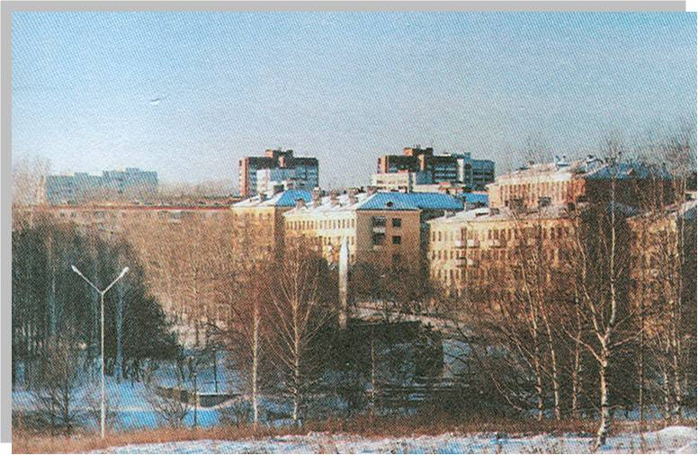

Улица Победы

Одна из самых на мой взгляд интересных улиц в городе – улица Победы. Южной, свободной от жилых домов, стороной глядя на пруд и окрестные горы, примыкает она к спортивно-парковой зоне, стадиону. В 1975 году к 30-летию Победы улица Спортивная была переименована в улицу Победы. О чём на одном из домов свидетельствует мемориальная доска. улица носила название “Спортивная”. Здесь на небольшом расстоянии друг от друга – два мемориальных комплекса: в честь победы народа в Великой Отечественной войне и в память о лесничанах, погибших в локальных войнах.